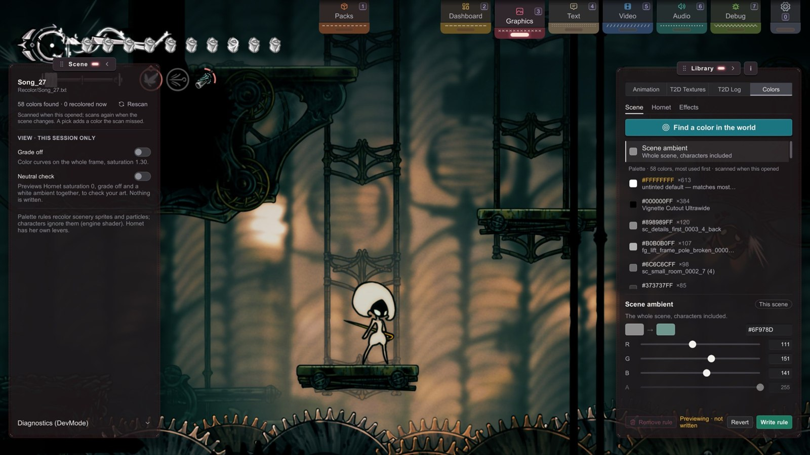
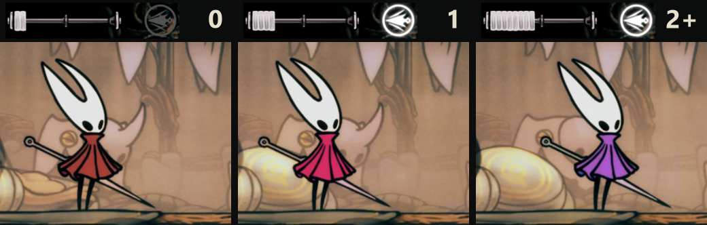

B9 Colors
Sprites · for creators.
Recolor a room, Hornet, or your nail slashes without painting a single sprite.
The Colors mode writes the rules while you watch.
You'll be able to: recolor a scene's props and particles, set the whole room's light, change how vivid Hornet is and shift her hue, recolor slashes and poison, and ship all of it in a pack.
What a color rule changes
A tint is a color applied when an object is drawn, separate from the colors painted into its texture.
A scene rule replaces a matching tint with a color you choose. It matches the color value, not an asset's identity or regional theme: different objects can share a tint without sharing the same artwork. Use the scene scan and outlines below to see what a rule will affect.
- Rules change colors, not pixels. To repaint the art itself, replace the sprite (Starting a Skin Pack).
- Scene rules reach scenery sprites and particles. Characters use a shader that ignores tints. Two controls do reach characters: the scene's ambient light reaches all of them, and the Hornet tab reaches Hornet only.
- Nothing is written to the game. Switch the pack off or delete a rule, and the vanilla colors come back at the next reload.
The Colors mode
Open Graphics (3, or the Graphics pull tab). Pick Colors in the mode row at the top of the Library panel. Colors uses both Graphics panels:
- Scene (left): the room's name and its rule file, the scan, and two view switches that write nothing.
- Library (right): three tabs, Scene, Hornet and Effects. Each shows a list of things you can recolor, and one editor under it.
Pick a row, change its value, and the game changes at once: that's a preview, and nothing is saved yet. The line at the foot of the editor says "Previewing · not written". Then:
- Write rule saves it. The line turns to "Written to" and the file name.
- Revert drops the preview and goes back to the rule, or to vanilla.
- Remove rule deletes a saved rule. It asks for a second click ("Click to remove") before it acts.
A rule column at the right of each row shows what is on file, so you can see at a glance what your rules change. The chip at the top of the editor says where a rule goes, This scene or Every scene; hover it for the file's full path.

Scene colors
The Scene tab lists the room's tints, most used first. The scan runs by itself when Colors opens and again when the scene changes; Rescan on the Scene panel runs it again by hand. Each row shows the color and a count: #5A7D6BFF ×42 means 42 objects share that tint, so a rule on it changes all 42. Plain white (#FFFFFFFF) is marked: it's the untinted default. A rule on it can affect otherwise unrelated objects; check the count and outlines before writing it. The Scene panel's count, "recolored now", is a quick check that your rules match anything at all.
In the editor, set the new color with the hex field or the R, G, B and A sliders. Scope decides where the rule goes: This scene writes to the scene's file; Every scene writes to _global.txt. A picked object that does not belong to this scene opens with Every scene.
Find a color in the world
The color finder is the reverse lookup. Click an object in the room, and a source card names the color it is drawn with and how far a rule would reach ("So are 12 other objects in this scene…"). Switch on Outline them in the world to see every object that shares that color. The pick takes scenery only. It's World Pick in a color mode.
The whole room's light: Scene ambient
Scene ambient is the first row of the list. It sets the ambient light that everything in the room takes, characters included. It's the lever for "make this room feel like dusk". It takes red, green and blue only.
Hornet
Hornet's shader ignores tints, but it reads a saturation value that the game sets for each area, usually about 0.5. That's why the colors you paint are not quite the colors you see: the game pushes her a little more vivid than your file. The Hornet tab has three levers for her body sprite. Other characters, and her effects, keep the game's colors.
| Lever | Range | The game's value | What it does |
|---|---|---|---|
| Saturation | -1 to 2 | set per area, usually 0.5 | How vivid she is. At 0 she shows the colors of your files; lower fades toward gray. |
| Hue | -1 to 1 | 0 | Turns all her colors around the color wheel. |
| Brightness | 0 to 2 | 1 | Lightens (above 1) or darkens (below 1) her colored parts only. White, gray and black stay, so the mask keeps its white. Above 1, red goes toward pink. |
Each lever has a slider and a number field. A mark on the track shows the neutral value, with a reset button under it ("game · reset" for saturation). Saturation also has a Your art's own colors · 0 button. Together the three make an HSV control: a pink cloak, for example, is a lower saturation with a brightness above 1.
Brightness needs a shader. It is an extra drawing pass. On macOS and Linux, it is not tested yet. If the editor says Not available, its note gives one of two reasons: the
stitchwork.assetbundlebeside the DLL is older than your Stitchwork (install both files from the same release), or your graphics API can't run the pass.
Silk tiers: her color as a silk gauge
The Silk tiers switch at the top of the Hornet tab makes her color show how many silk skills she can cast now: 0, 1 or 2+. You can read it from her instead of the HUD.

While the switch is on, the editor gets a Tier row. Write rule and Remove rule act on the tier that you choose. Dots beside a lever show which tiers have a rule. Base is her color without tiers: the game's own, or the value that you set. A tier with no rule of its own uses this default:
| Lever | 0 casts | 1 cast | 2 or more |
|---|---|---|---|
| Saturation | 0.1 | Base | Base + 0.2 (max 2) |
| Hue | Base | Base | Base + 0.05 |
| Brightness | Base | Base | Base |
Effects
The Effects tab holds two small groups:
- Slash: Base, Fire and Poison, the colors of your nail slashes. Base shows on your next swing. A live imbuement still shows its own color; in a fight, that tint is information.
- Poison:
- Tint and Hero set the purple that the Pollip Pouch puts on tools and on Hornet.
- Hue shifts poison hues, for all tools or for one.
- The Tool button steps through "All tools" and each tool whose poison hue the game has read this session.
- The HUD and inventory update at once. Spawned tools change on their next spawn.
Seeing your own colors
Two switches on the Scene panel, under "View · this session only", change what you see and write nothing:
- Grade off. Many scenes color-grade the whole frame, Hornet included. Grade off removes the grade for this session. Where a scene has no grade, the switch is disabled.
- Neutral check previews three things together: Hornet's saturation at
0, the grade off, and a white ambient light. With it on, Hornet looks like your PNG in an image viewer. Switch it off and each value comes back. An edit to Hornet's saturation or the ambient turns it off first.
The files, if you'd rather type
All color rules live in Recolor/, in a pack or in your working folder (<Game folder>/). When the room looks right, Push carries the files into your pack like any other asset. A rule file that you save by hand applies a moment later. This is true for every file in Recolor/, in your working folder and in active packs. The editor's own writes apply at once.
The folder is
Recolor/. Older versions usedRecolour/, and Stitchwork still reads it in a pack. Stitchwork renames it in your working folder at startup; you rename it in your pack, where the Pack Doctor report flags the old name.
Scene rules: Recolor/<SceneName>.txt
The scene name is the one the Scene panel shows. One rule per line; any line without -> or a known key is a comment. These colors are examples; take the source colors for your own rules from the scene scan.
example tint adjustments for this room
#5A7D6B -> #4F7A8C
#A8C07A -> #9FB8D0 0.08
particle: #C8E6B4 -> #B4D2F0
ambient: #6E7B94
group: Foreground#RRGGBB -> #RRGGBBswaps a tint. Either side can carry alpha as#RRGGBBAA.- The optional number at the end is the tolerance: how close a tint must be to count as a match. The default is
0.05, the range0.001to0.5. Raise it when a family of near-identical tints should all move. particle:in front makes the rule apply to particle systems.ambient: #RRGGBBsets the scene ambient. Write rule saves it with an alpha pair at the end (#6E7B94FF). The ambient ignores the alpha.group: <name part>limits the sprite rules to objects whose full path in the scene contains that text (case-insensitive). With severalgroup:lines, an object matches when its path contains any of the texts. Thegroup:lines of all sources join one list per scene. That list limits all sprite rules of the scene; particle rules ignore it.
Recolor/_global.txt holds rules for every scene. It reads plain -> rules only (no particle:, ambient: or group:), and it also reaches things that live across scenes, like HUD icons and persistent effects.
Hornet: Recolor/_hero.txt
saturation: 0.8
hue: -0.1
brightness: 1.2
tiers: on
saturation@casts0: 0
hue@casts2: 0.15saturation,hueandbrightnesstake the ranges in the table above. A value outside a range is clamped, and a comma works as the decimal point.tiers: onortiers: off(or1and0) sets the Silk tiers switch.@casts0,@casts1and@casts2after a lever name set that lever for one tier (2means two or more).- Any other line is ignored, so you can leave notes in the file.
Effects: Recolor/_slash.txt and Recolor/_poison.txt
_slash.txttakesbase:,fire:andpoison:, each with a color, for examplebase: #FFD27F._poison.txttakestint:andherotint:with a color,hueshift:with a number from-1to1for every tool, andhueshift[Tool Name]:for one tool. The log prints each tool's name and vanilla value the first time the game reads it.
When two packs disagree
Packs are read in priority order, and the first pack wins a tint or a key. Unlike sprites, here your working folder wins over every pack, so the editor always shows what you just wrote, and tiers: off there turns off a pack's tiers.
A rule that loses to another source shows under Covered in the Pack Manager. An ambient: line that loses shows as <scene>/ambient.
| Files | Two sources |
|---|---|
Scene files, _global.txt, _slash.txt | Two sources that set the same color are not a conflict. |
_hero.txt, _poison.txt | Two sources of one key are a conflict, even with an equal value. The winner applies, and each losing source adds one Covered row. |
The full picture is in Priority & Conflicts.
Next
- Finding Any Sprite: World Pick, which the color finder is built on.
- Starting a Skin Pack: to change the art itself.
- Pack Folder Structure: where
Recolor/sits in a pack.